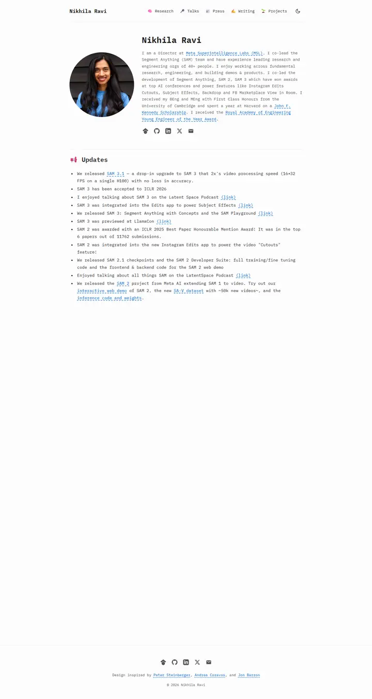
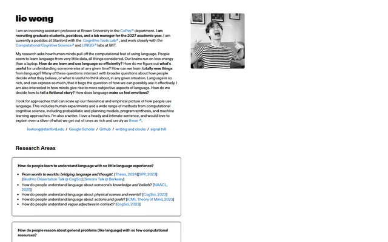

Nikhila Ravi
オフホワイトの紙に刷った開発者のジン。すべて IBM Plex Mono で組まれ、道しるべは絵文字、リンクは破線の下線つきの青。

表示されたページと照合済みです。
選んだ理由
等幅書体、絵文字のナビアイコン、円形のポートレートが、ゆったりした余白とともに統一感のある開発者ジンらしさを生んでいます。
以下の説明と DESIGN.md 本文は英語です。コーディングエージェントが同じ一つの版を読めるよう、翻訳していません。
概要
カラーパレット
タイポグラフィ
IBM Plex Mono
Nikhila Ravi, computer vision, segmentation, 3D
Abstract · Method · Results · BibTeX — 0123456789
余白と形
ページの構成要素
ガイドライン
似たスタイル

Anagh Malik
アプリコットで温めた Barron の表。14px の Lato、オレンジに光る青いリンク、大事な論文は午後遅くの光の帯の中に収まっている。

Lionel (Lio) Wong
左端に留めたスイス・グロテスクのインデックスカード。ずんぐりした黒いワードマーク、余白に掛けた粒子の粗いモノクロのポートレート、細い黒枠で囲まれた研究上の問い。

Amir Bar
Imperial ブルーの端正な教員案内。白地に Inter、ピル型のリンク、手を伸ばすと数ピクセル浮き上がる論文カード。

Christoph Feichtenhofer
学会ホールの横断幕のような Facebook ブルーの帯に続き、赤字の論文名、緑の掲載先、両端揃えのグレーの要旨が長い台帳のように並ぶ。

David B. Lindell
丁寧な編集者が組んだラボノート。Source Serif の本文、Source Sans のラベル、澄んだ青ひとつ、そしてどの論文にも写真が添えて綴じてある。

David Novotny
夕暮れの港と静かな閲覧室。ティールからミッドナイトへの固定パネルに右揃えの連絡先、白地には柔らかなグレーの文字とタンジェリン色のリンク。